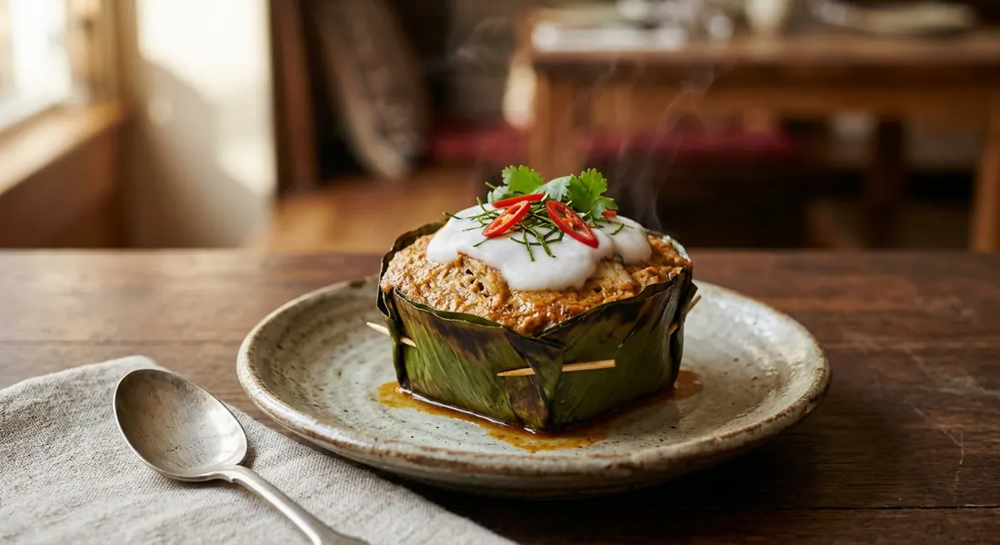

Minced fish and red curry paste set with egg into a soft custard, steamed in a banana-leaf cup and capped with split coconut cream.

ห่อหมก takes its name from the method — ห่อ, to wrap, and หมก, the old way of burying food in the fire to cook it in its own juices. The modern version swaps the embers for a steamer: fish, curry paste and coconut milk, bound with egg into a custard, wrapped in a banana-leaf cup. No flour-heavy cake, no curry soup — a set, savoury mousse that holds its shape and takes a spoon clean.
Two details carry the dish. The knead — Kapook works the minced fish and curry paste by hand until the mix turns sticky, the protein set that gives hor mok its spring. And the cap — every version finishes with head coconut cream, simmered until it splits, spooned over the top for the last minutes of steam. The white cap with its shred of chilli and kaffir lime is the signature of a proper hor mok.
The old way was a clay-pot labour: Pim's introduction remembers hor mok being stirred over the fire for one or two hours until thick. Mahidol's classic from-scratch recipe still kneads for an hour, in one direction only, before the egg goes in. The home versions below take twenty minutes of hands and a steamer — and the difference is barely detectable.
| Thai | English | Amount |
|---|---|---|
| เนื้อปลาบด (ปลาอินทรี ปลากราย หรือปลาช่อน) | Minced fish (mackerel, pla krai or snakehead) | 500 g |
| เนื้อปลาสไลซ์ | Fish, sliced | 200 g |
| น้ำพริกแกงเผ็ด | Red curry paste | 100 g |
| ไข่ไก่ | Egg | 1 |
| น้ำตาลทราย | Sugar | 4 tbsp |
| น้ำปลา | Fish sauce | ¼ cup |
| กะทิ | Coconut milk | 2 cups |
| แป้งข้าวเจ้า | Rice flour | 2 tsp |
| กะหล่ำปลีซอย หรือผักกาดขาว | Shredded cabbage or Chinese cabbage | to line |
| ใบโหระพา | Thai basil | to line |
| กระทงใบตอง | Banana-leaf cups | as needed |
| หัวกะทิ | Coconut cream | ⅓ cup (topping) |
| พริกชี้ฟ้าซอย | Long chilli, sliced | to garnish |
| ใบมะกรูดหั่นฝอย | Kaffir lime leaf, finely sliced | to garnish |
No cups, no problem: Kapook's own note — if you have no banana-leaf cups, use small bowls or ramekins.
The fish. Kapook minces mackerel, pla krai or snakehead — any firm fish. Wongnai uses pla krai alone. Phol Food Mafia's chef splits it: 250 g snakehead chunks folded into 125 g minced pla krai. Pim does it with seabass. Mahidol's classic is boneless snakehead only, washed three times with salt to strip the muddiness.
The curry paste. Most buy it: red curry paste at Kapook, Phol and Wongnai. Pim swaps in southern coconut curry paste (พริกแกงกะทิใต้) for the hotter, sharper southern take. Mahidol pounds the paste from scratch — dried chillies, galangal, lemongrass, kaffir lime zest, shallots, garlic, fingerroot, shrimp paste, fish sauce.
The thickener. Rice flour in the cream at Kapook (2 tsp) and Phol (1 tsp); plain flour at Pim; Phol also kneads cornflour into the fish mix. Mahidol and Wongnai use none — the long knead, or the blender, does the setting instead.
The leaf lining. Cabbage at Kapook and Wongnai; Thai basil at Phol and Pim (which offers bai yor, cabbage, banana blossom or kale as substitutes); blanched bai yor leaves — ⅓ cup per cup — at Mahidol, whose whole dish is named after it.
The egg. One egg at Kapook, Phol and Pim; two at Wongnai, the loosest and softest of the set.
The sweetener. White sugar at Kapook, Phol and Pim; palm sugar at Wongnai; none at all at Mahidol — the traditional recipe sweetens with nothing, leaning on salt, shrimp paste and fish sauce alone.
The steam. 20 minutes then 5 with the cream (Kapook); 15 then 3 (Phol); 10 low then 10 high (Pim); 15–20 straight through (Mahidol); a flat 20 (Wongnai). Same set, different patience.
Hands vs blender. Kapook and Phol knead by hand — Mahidol kneads a full hour in one direction. Pim and Wongnai blend everything in a minute and accept a slightly looser custard.
This recipe is translated from the following Thai-language sources. Where they disagree, we've said so.
1. Kapook — "ห่อหมกปลา สูตรทำง่ายเนื้อไม่เละ เข้มข้นถึงเครื่องแกง" by Rin's Cookbook (the recipe used here) — cooking.kapook.com
2. Mahidol University Institute of Nutrition — "ห่อหมกปลาช่อนใบยอ" (the from-scratch paste, 10-serving version) — inmu.mahidol.ac.th
3. Phol Food Mafia — "Steamed Fish in Red Curry Mousse (ห่อหมกปลาช่อน)" (the chef's two-fish mix) — pholfoodmafia.com
4. ครัวบ้านพิม (Pim) — "ห่อหมกปลากะพง" (the southern paste, blender version) — pim.in.th
5. Wongnai — "วิธีทำ 'ห่อหมกปลากราย' เมนูอาหารไทยเด็ดถึงเครื่อง" (the 3-step blender version) — wongnai.com